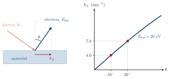
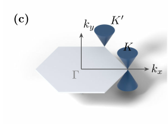

Advanced Quantum Materials 2027 · All lectures · Lecture notes
Session 2. Symmetries, Tight-Binding Band Structure Theory, and Effective Models
2.12 Measuring band structures with ARPES
Can any of this formalism be observed? The energy eigenvalue \(E(\mathbf{k})\) is clearly physical, but the quasi-momentum \(\mathbf{k}\) itself was introduced as a symmetry eigenvalue in Section 2.6. So we ask whether we can measure it directly, and whether we can measure the relation between the two. We will now see that one experiment measures both, since the total energy and the momentum along the surface are kept when a photon removes an electron from the material.
\[\varphi = \frac{a\,p}{\hbar} = k\,a. \tag{2.10}\]
This is the relation of Section 2.6 between the phase \(\varphi\) of the translation eigenvalue \(e^{i\varphi}\) and the momentum. Here \(p\) is the momentum, \(a\) the lattice constant and \(k\) the quasi-momentum, which is defined up to a multiple of \(2\pi/a\).
The answer is yes, with angle-resolved photoemission spectroscopy (ARPES). The idea is simple in principle. We send photons of known energy and momentum onto a material, and each photon can remove an electron from the material completely, which is the photoelectric effect. The kinetic energy and the emission angle of the electron are measured outside the material, and together they give its momentum there. Conservation of energy and of the momentum along the surface then gives its energy and its momentum along the surface when it was still inside. So when we scan the emission angle and the kinetic energy of the emitted electrons, we map \(E(\mathbf{k})\) directly.
This is how the band structure and the Fermi surface of graphene are measured in practice. The measured bands show the Dirac cone of Section 2.11, distorted by the coupling of the electrons to each other, to phonons and to plasmons, in this article.
The component of the momentum along the surface does not change when the electron leaves the material, and this gives the main result of this section.
An electron that leaves the surface with the kinetic energy \(E_\text{kin}\), at the angle \(\theta\) from the normal, has the momentum along the surface
\[\hbar k_\parallel=\sqrt{2mE_\text{kin}}\,\sin\theta,\]
and this is also the quasi-momentum along the surface of the state that it left, up to a vector of the reciprocal lattice. This neglects the momentum of the photon, which is about \(0.1\) nm\(^{-1}\) for photons of \(20\) to \(25\) eV. The kinetic energy, together with the photon energy \(h\nu\) and the work function \(\phi\), gives the energy of the occupied state, \(E-E_F=E_\text{kin}+\phi-h\nu\), and the angle gives its momentum. So a scan of both maps \(E(\mathbf k)\) below the Fermi level.
The steps From the emission angle to the momentum
Outside the material the electron is free, so its energy is all kinetic, \(E_\text{kin}=p^2/2m\), and the size of its momentum is \(p=\sqrt{2mE_\text{kin}}\). The angle \(\theta\) is measured from the normal to the surface, so the component of \(\mathbf p\) along the surface is
\[p_\parallel=p\sin\theta=\sqrt{2mE_\text{kin}}\,\sin\theta.\]
The surface keeps the translations along itself, so this component does not change when the electron crosses the surface, and \(\hbar k_\parallel=p_\parallel\). The component along the normal does change, since the surface breaks the translations along the normal. For numbers we use \(\hbar^2/2m=3.81\) eV Å\(^2\), which gives
\[k_\parallel=\sqrt{\frac{E_\text{kin}}{\hbar^2/2m}}\,\sin\theta.\]
For \(E_\text{kin}=20\) eV the square root is \(\sqrt{20/3.81}\) Å\(^{-1}=2.29\) Å\(^{-1}\), which is \(22.9\) nm\(^{-1}\). At \(\theta=10^\circ\) we get \(22.9\times0.174=3.98\) nm\(^{-1}\), the \(4.0\) nm\(^{-1}\) of Schematic 2.15.
The photon also has a momentum, with the wave vector \(h\nu/\hbar c\). With \(\hbar c=197.3\) eV nm a photon of \(25\) eV has \(0.13\) nm\(^{-1}\), which is small next to these \(3.98\) nm\(^{-1}\), so we leave it out. The energy follows from the conservation of the energy. The photon brings \(h\nu\), and an electron at the Fermi level needs the work function \(\phi\) to leave, so a state at the energy \(E\) gives \(E_\text{kin}=h\nu-\phi-(E_F-E)\). This is the relation of the box, and only the occupied states, with \(E<E_F\), are seen.
Schematic 2.15 shows the geometry and this relation.


The armchair graphene ribbons of this measurement are nine carbon atoms wide and are made on Au(111). ARPES, together with scanning tunneling spectroscopy with a Fourier transform, gives their band gap of \(1.4\) eV and effective masses of about \(0.1\,m_e\) for both electrons and holes. Our reading is that this mass is the curvature (2.18) of the measured bands at their edges. The measurement is in this article, which is also the one given in the notebook session2.ipynb.
ARPES measures the kinetic energy and the emission angle of each emitted electron. What do we obtain from these two numbers?
Show the answers
- A. ✓ True
This is true. Conservation of energy and of the momentum along the surface relates the measured values to the ones inside. Scanning the angle and the energy then maps the band structure directly.
- B. ✗ False
This is false. The angle is not averaged out. For electrons of \(20\) eV, an angle of \(10^\circ\) gives \(k_\parallel\approx 4.0\ \text{nm}^{-1}\) and \(20^\circ\) gives \(7.8\ \text{nm}^{-1}\), so each angle is a different momentum.
- C. ✗ False
This is false. For the chain \(\epsilon=-2t\cos(ka)\) the electrons seen at \(k=0\) have energy \(-2t\), and at \(ka=\pi/2\) they have \(0\). The energy depends on the angle, so we get the momentum too.
The angle gives the momentum along the surface, and the energy gives the band.
An electron leaves the surface with \(E_\text{kin}=20\) eV, at \(\theta=10^\circ\) from the normal. Its momentum along the surface is
\[\hbar k_\parallel=\sqrt{2mE_\text{kin}}\,\sin\theta.\]
Use \(\hbar^2/2m=3.81\) eV Å\(^2\). What is \(k_\parallel\)?
Show the answers
- A. ✓ True
This is true. The square root gives \(\sqrt{20/3.81}\) Å\(^{-1}=2.29\) Å\(^{-1}\), which is \(22.9\) nm\(^{-1}\). With \(\sin10^\circ=0.174\) this is \(k_\parallel=3.98\) nm\(^{-1}\).
- B. ✗ False
This is false. This is the value at \(\theta=20^\circ\), where \(\sin20^\circ=0.342\). At \(10^\circ\) the sine is \(0.174\), about half of it, and so is \(k_\parallel\).
- C. ✗ False
This is false. The square root is \(2.29\) in units of Å\(^{-1}\), so \(k_\parallel=0.398\) Å\(^{-1}\). One Å\(^{-1}\) is \(10\) nm\(^{-1}\), so this is \(3.98\) nm\(^{-1}\), and \(0.40\) is the number in Å\(^{-1}\) with the wrong unit.
The edge of the Brillouin zone, \(\pi/a\), is \(7.85\) nm\(^{-1}\) for \(a=0.4\) nm, so at \(20\) eV ARPES reaches it at an angle of about \(20^\circ\).
In an ARPES experiment the electrons have \(E_\text{kin}=20\) eV, and the crystal has the lattice constant \(a=0.4\) nm along the surface. At which angle \(\theta\) do we reach the edge of the Brillouin zone, \(k_\parallel=\pi/a\)? At which angle for \(E_\text{kin}=80\) eV? Use \(\hbar^2/2m=3.81\) eV Å\(^2\).
Solution
The edge of the zone is at \(\pi/a=\pi/0.4\) nm\(^{-1}=7.85\) nm\(^{-1}\). For \(20\) eV the size of the momentum is \(\sqrt{20/3.81}\) Å\(^{-1}=22.9\) nm\(^{-1}\), so
\[\sin\theta=\frac{7.85}{22.9}=0.343,\qquad \theta\approx20^\circ.\]
For \(80\) eV the momentum is twice as large, \(45.8\) nm\(^{-1}\), since it grows as \(\sqrt{E_\text{kin}}\). Then \(\sin\theta=0.171\) and \(\theta\approx9.9^\circ\). At \(80\) eV the photon has about \(0.4\) nm\(^{-1}\), five percent of \(\pi/a\), so this angle holds to about half a degree.
So a higher kinetic energy covers more of the Brillouin zone for the same range of angles. In an experiment the photon energy sets the kinetic energy, and it decides which part of the zone a given range of angles maps.
2.13 Closing summary
From Session 1 this session used the single-particle part of the Hamiltonian (1.5), the hopping of second quantization, with the interactions left aside or already treated in mean field as in Section 1.12. With it we saw the following.
Symmetry as a tool to simplify. When the ground state shares the symmetry of the Hamiltonian, we can use a symmetry operator that commutes with it, \([H,S]=0\) in (2.3). We then find the eigenbasis of \(H\) by finding the eigenbasis of \(S\) instead, as we did for rings of three and five sites in Section 2.4.
Bloch’s theorem is this same idea applied to translational symmetry on an infinite lattice. Eigenstates have a definite phase \(\varphi\) under translation, which is the quasi-momentum of (2.10). This turns one infinite-dimensional diagonalization into a continuous family of finite ones, given by the Bloch Hamiltonian \(H(\varphi)\).
We derived the band structure of the one-dimensional chain explicitly, \(\epsilon_\varphi=-2t\cos\varphi\) in (2.8). We generalized the same method to second-neighbor hopping (2.9), to several orbitals per unit cell with the matrix Bloch Hamiltonian \(H(\varphi)=t+\gamma e^{i\varphi}+\gamma^\dagger e^{-i\varphi}\) in (2.12) and (2.13), and to higher spatial dimensions, (2.14) and (2.15).
A dispersion \(E(\mathbf{k})\) directly determines the measurable properties of a material, which are the density of states (2.16), the group velocity (2.17), the effective mass (2.18) and the Fermi surface. Almost every band structure in this course is built locally from three types, which are parabolic, Dirac and flat.
The Dirac cone of the honeycomb lattice of graphene, \(H(\mathbf{q})\approx\hbar v_F(q_x\sigma_x+ q_y\sigma_y)\) at \(K\), with the opposite sign of the \(\sigma_y\) term at \(K'\), and \(E_\pm=\pm\hbar v_F|\mathbf{q}|\) at both, in (2.20) and (2.21), is the most important example of this session. We derived it directly from the vanishing of the off-diagonal Bloch Hamiltonian (2.19) at the points \(K,K'\). The Lieb and kagome lattices realize flat bands with interference in real space, and with no fine-tuning.
All of this band-structure method generalizes directly to phonons, magnons and Bogoliubov-de Gennes quasiparticles, and not only to electrons. It is tested against real materials in experiments with ARPES.
The spectra of periodic systems are computed with band-structure theory, by choosing the common eigenbasis of the symmetry operator and the Hamiltonian. The dispersion relation \(E(\mathbf{k})\) alone then determines many of the electronic properties of a material, before interactions are included again.
After this session we can do the following.
- Use a symmetry that commutes with \(H\) to label the eigenstates by phases, as in Section 2.3.
- Find the eigenstates and the energies of a ring without a diagonalization, as in Section 2.4.
- Derive the band of a chain with first- and second-neighbor hopping, and say where its extrema are, as in Section 2.5.
- Say why \(k\) is defined up to \(2\pi/a\), and how the zone changes with the cell, as in Section 2.6.
- Write the Bloch Hamiltonian of a lattice with several orbitals per cell, and count the bands of a larger cell, as in Section 2.7.
- Write the band of the square and the cubic lattices, with their widths \(8t\) and \(12t\), as in Section 2.8.
- Read the density of states, the velocity, the effective mass and the Fermi surface from a band, and tell the three types apart by their density of states, as in Sections 2.9 and 2.10.
- Derive the Dirac cone of graphene and its velocity, as in Section 2.11.
- Say why the kagome and the Lieb lattices have a flat band, and at which energy it sits for a given sign of \(t\), as in Section 2.11b.
- Turn an emission angle and a kinetic energy into a momentum along the surface, as in Section 2.12.
A unit cell has four orbitals. What is the size of \(H(\varphi)\), and how many bands do we get?
Show the answers
- A. ✓ True
This is true. The Bloch Hamiltonian has one row and one column for every orbital of the cell. At each \(\varphi\) it has four eigenvalues, and they form the four bands.
- B. ✗ False
This is false. A \(2\times 2\) matrix describes a cell with two orbitals, such as the chain of (2.13). With four orbitals, the rows of \(H(\varphi)\) run over four orbitals.
\[H(\varphi) = \begin{pmatrix} 0 & 1+\eta\,e^{-i\varphi} \\ 1+\eta\,e^{i\varphi} & 0 \end{pmatrix}, \qquad \epsilon_\pm(\varphi) = \pm\left|1+\eta\,e^{-i\varphi}\right|. \tag{2.13}\]
- C. ✗ False
This is false. Take the uniform chain with a cell of four sites. At \(\varphi=0\) the four eigenvalues are \(-2t\), \(0\), \(0\) and \(2t\), so there are four bands and not one.
The size of the Bloch Hamiltonian is the number of orbitals in the cell.
Each picture shows a density of states \(g(E)\) per unit cell. The energy \(E\) is in units of the hopping \(t\). Which one belongs to graphene?
Show the answers
- A. ✗ False
This is false. This is the chain, with \(g(E)=1/(\pi\sqrt{4t^2-E^2})\) per site. It is \(1/(2\pi t)\approx0.16/t\) at zero energy, it does not vanish there, and it diverges at the band edges \(\pm2t\), as a band in one dimension does. In the picture the broadening of \(0.04\,t\) cuts the two peaks to about \(0.64/t\).
- B. ✓ True
This is true. It vanishes in proportion to \(|E|\) at zero energy, where the two Dirac cones are, and the broadening of the calculation rounds the tip of the V. It has two peaks at \(\pm t\) from the saddle points at \(M\), and it ends at \(\pm3t\).
- C. ✗ False
This is false. It also has a V, but at \(-t\), where two bands cross, and it has a narrow peak at \(2t\) that goes far above the plot. This peak is a flat band, and this is the kagome lattice with \(H=-t\sum c_i^\dagger c_j\). Graphene has no flat band, and its V is at zero energy.
Graphene is the only one of the three whose V is at zero energy. Without the broadening its density of states vanishes there.
- In Session 3 the Dirac cone of Section 2.11 is gapped, which gives the Chern insulator of Section 3.10. The two-orbital chain of (2.13) becomes the SSH model of Section 3.9.
- The Bloch Hamiltonian is the object whose Berry curvature gives the Chern number in Section 3.5.
- The flat bands of this session lead to the Landau levels of Session 4, which are flat bands with Chern number one in Section 4.4.
- The density of states at the Fermi level decides the Stoner criterion of Section 6.6, and nesting drives the instabilities of Section 9.4b.
- In Section 10.7 an ARPES spectrum is one of the observables from which a Hamiltonian is learned.